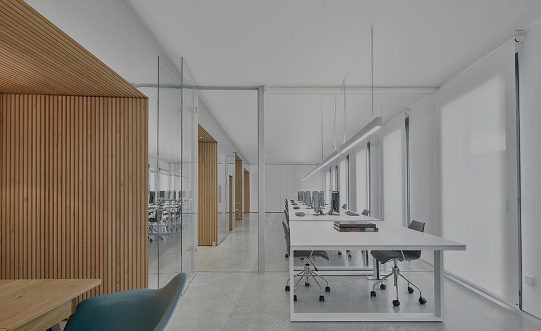
01 / OFFICE
오피스 ↗일에 온전히 집중하는 곳
1인부터 300인 이상까지. 독립 사무실부터 전층 통임대까지 우리 팀에 맞춰 구성하세요.
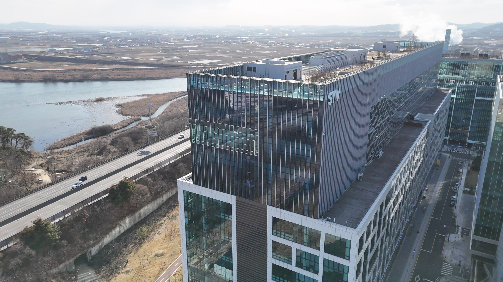
GODEOK STV · KNOWLEDGE INDUSTRY CENTER
일에 집중하는 시간, 더 넓어지는 가능성.
당신의 다음을 위한 공간, 고덕STV.
고덕STV는 다양한 일의 방식을 담습니다.
독립적인 오피스부터 제조시설, 함께 사용하는 공용공간까지.
입주 이후의 편리함도 함께 생각합니다.
몰입과 협업, 그리고 잠깐의 여유까지.

1인부터 300인 이상까지. 독립 사무실부터 전층 통임대까지 우리 팀에 맞춰 구성하세요.

20평부터 1,000평 이상까지. 드라이브인과 도어투도어 동선을 고려한 제조 공간.
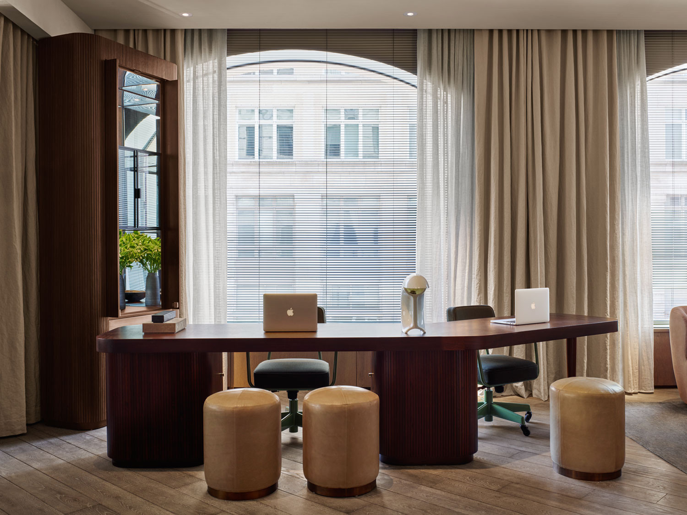
비즈니스 라운지, 회의룸과 테라스. 업무의 집중과 휴식을 돕는 시설을 만나보세요.
ROOM FOR YOUR NEXT
작은 팀을 위한 독립 사무실부터 전층 통임대까지.
지금 필요한 규모와 앞으로의 계획에 맞춰
우리 회사다운 업무 공간을 구성합니다.
스타트업부터 중견기업까지, 인원과 업무 방식에 따라 사무실의 규모를 선택할 수 있습니다. 팀이 커지면 추가 공간 확보도 함께 상담합니다.
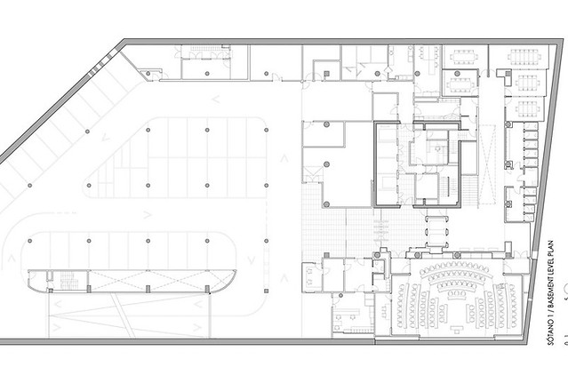
전층을 단독으로 사용하는 경우 미팅룸, 대표실, 카페테리아 등 전용 시설을 계획할 수 있습니다. 필요한 공간과 동선을 먼저 이야기해 주세요.
DETAILS FOR EVERY WORKDAY
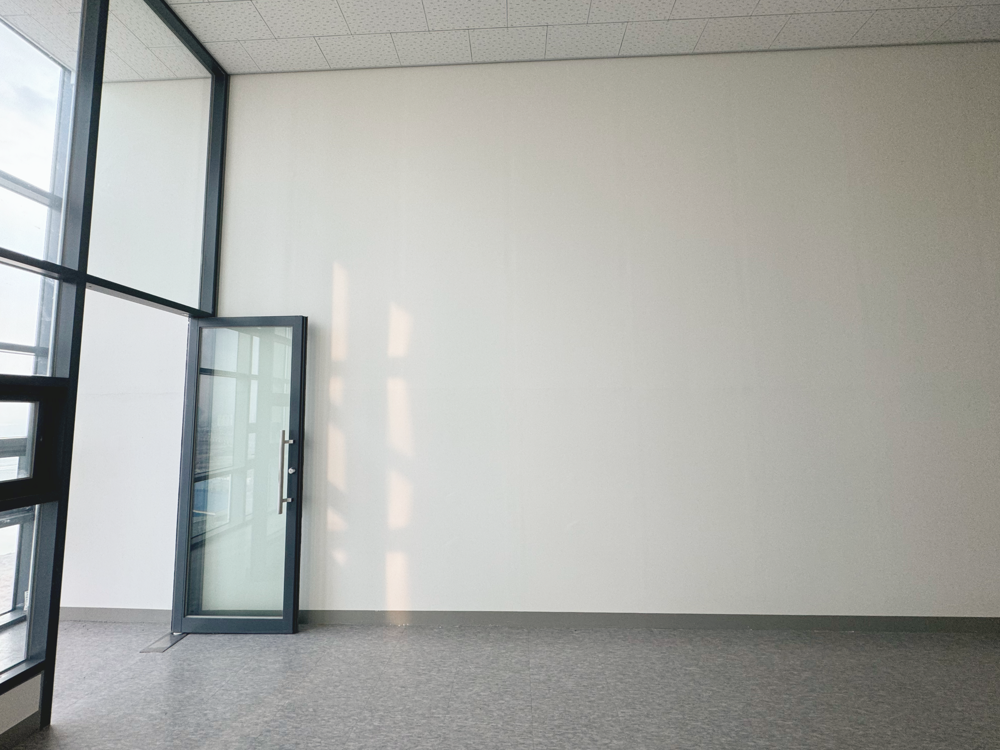
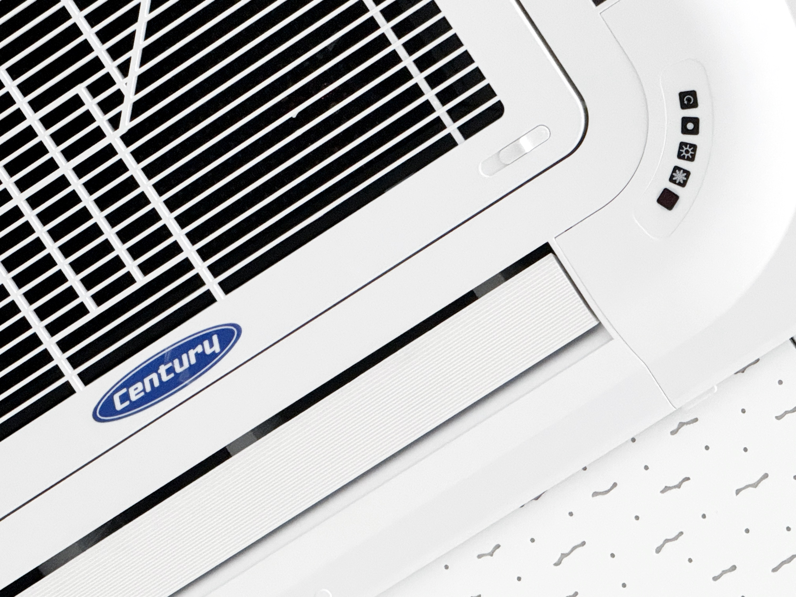
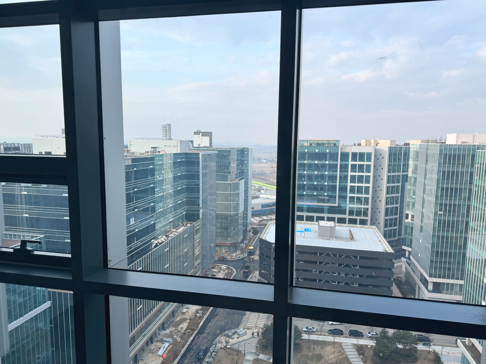
공간 구성과 설비 제공 범위는 선택한 호실에 따라 다릅니다.
작업 공간, 차량 진입, 상하차 동선.
제조업에 필요한 조건부터 살핍니다.
지하 2층부터 지상 6층까지 이어지는 드라이브인 동선. 5t 윙바디 차량 진입을 고려한 설계입니다.
호실 앞까지 차량이 진입하는 도어투도어 시스템으로 물류 이동과 상하차 동선을 줄입니다.
높은 층고와 발코니를 활용해 제조 공간과 사무 공간을 함께 계획합니다. 호이스트 설치 가능 여부도 호실별로 상담합니다.
진입 차량 규격, 호이스트 설치 및 사용 가능한 면적은 호실별 조건을 상담 시 확인해 주세요.
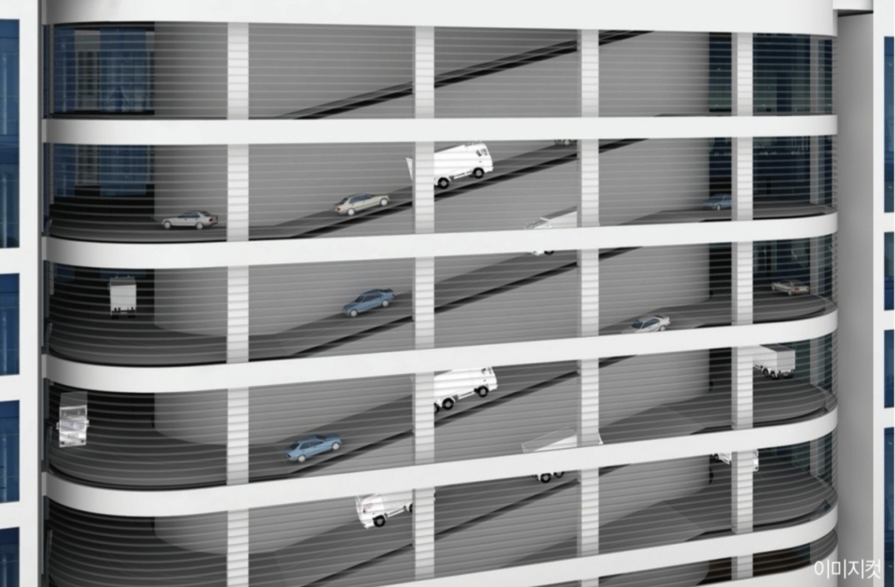
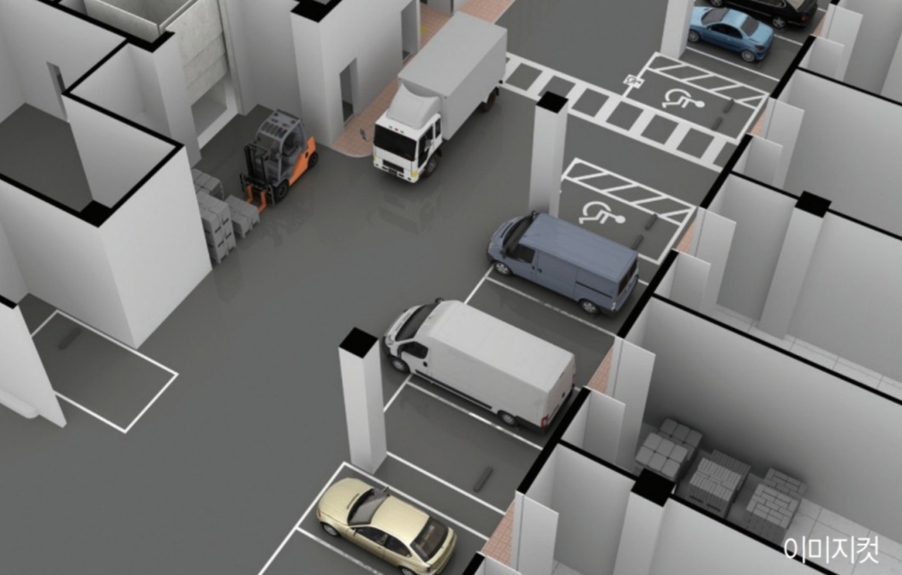
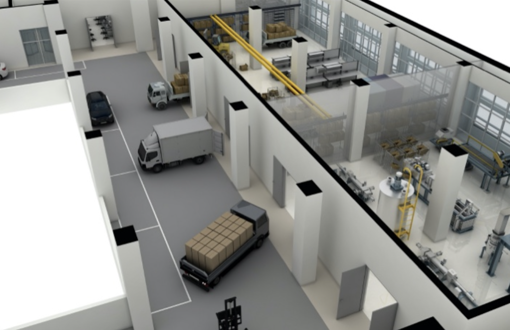
A LITTLE MORE ROOM TO BREATHE
회의가 필요한 순간에도, 잠깐의 재충전이 필요할 때도.
업무 공간 밖에서 만나는 고덕STV의 편의시설입니다.
개인 업무부터 대면·비대면 미팅까지. 24시간, 연중무휴로 이용하는 비즈니스 공간입니다.
업무 중 잠시 바깥 공기를 마실 수 있는 옥상 휴게공간과 입주자 전용 7층 테라스.
가까운 곳에서 쉬어 가는 층별 라운지와 일상에 편리함을 더하는 샤워시설.
일과 운동의 균형을 위한 입주자 편의시설. 이용 방법과 운영 시간은 입주 상담 시 안내합니다.
지제역, 고덕신도시, 삼성 평택캠퍼스와 STV를 연결하는 셔틀 안내. 운행 시간과 정차 위치는 방문 전 확인해 주세요.
이미지는 공간 구성 예시입니다. 시설별 운영 현황과 이용 조건은 관리사무소에서 확인하실 수 있습니다.
필요한 면적을 가늠하는 순간부터
입주 후 설비를 관리하는 일까지 함께합니다.
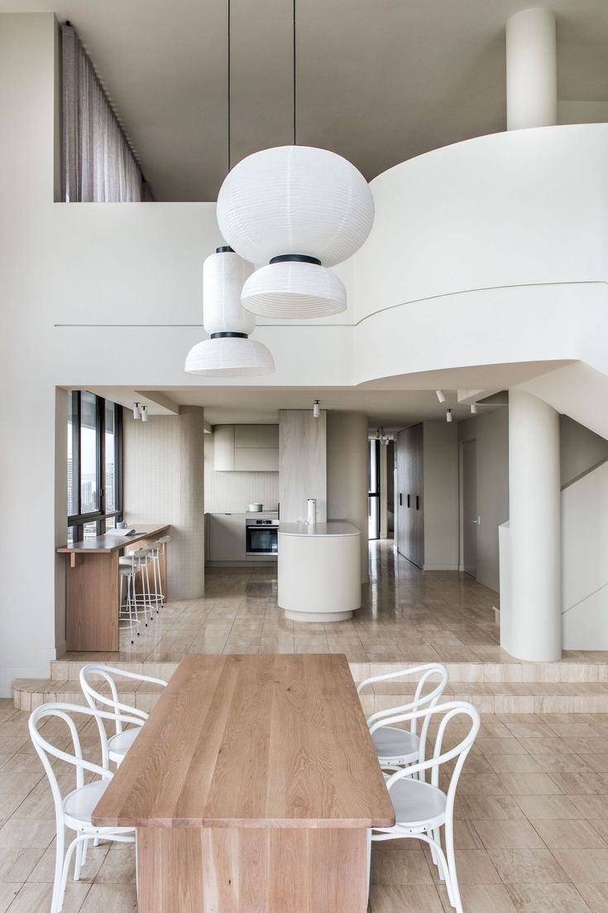
인원에 맞는 규모 예측, 공간 구성과 동선, 설계·시공까지. 원하는 업무 환경을 만들기 위한 준비 과정을 상담합니다.
공간 설계·시공 안내 · 종합 건설 매튜
건물과 시설의 이용 문제, 설비 점검과 수리 등 입주 이후의 공간 관련 업무를 관리팀에 안내받을 수 있습니다.
공간 관리 안내 · 아론
장기 계약이 부담스러운 팀을 위한 단기 임대 안내. 6개월 이상 이용 시 할인 조건도 상담할 수 있습니다.
초기 보증금 부담을 줄이는 조건으로 안내하고 있습니다. 선택한 호실의 월 이용료와 함께 확인해 주세요.
인원이 늘어나거나 업무 형태가 바뀔 때, 추가 공간과 전층 이용 가능 여부를 함께 살펴봅니다.
한 장의 계약서로 간결하게 진행하는 계약 절차를 안내합니다. 계약 전 호실별 비용, 사용 범위와 입주 일정을 함께 확인해 주세요.
실제 적용 조건·할인·입주 가능 여부는 호실과 계약 시점에 따라 상담 후 확정됩니다.
공간 선택부터 시설 이용까지.
먼저 확인하시면 더 편리합니다.
1인 규모부터 300인 이상을 위한 오피스 구성을 안내하고 있습니다. 전층 단독 이용 시 미팅룸, 대표실, 카페테리아 등도 함께 계획할 수 있습니다. 현재 이용 가능한 호실은 전화로 확인해 주세요.
지하 2층부터 지상 6층까지 5t 윙바디 차량 진입을 고려한 드라이브인·도어투도어 설계입니다. 실제 차량 높이, 길이와 호실별 진입 조건은 입주 전에 확인해 주세요.
비즈니스 라운지, 화상회의룸, 루프탑 휴게공간, 입주자 전용 7층 테라스, 층별 라운지와 샤워실, 피트니스 클럽을 안내하고 있습니다. 예약이 필요한 시설은 입주자 서비스에서 확인하실 수 있습니다.
24시간 연중무휴 이용을 안내하고 있습니다. 예약 가능 시간과 시설별 이용 조건은 입주자 서비스 또는 관리사무소를 통해 확인해 주세요.
셔틀버스는 월–금 07:00–20:00 운행으로 안내하고 있습니다. 첫 운행은 지제역 07:00 → 고덕신도시 먹자골목 07:15 → 삼성 평택캠퍼스 정문 07:25 → 고덕STV 07:45이며, 이후 약 30분 간격으로 정차합니다. 실제 운행 여부와 시간은 방문 전 1588-3247로 확인해 주세요.
1588-3247로 전화하거나 stv2024@naver.com으로 원하는 날짜, 인원·면적, 공간 종류를 알려주세요. 담당자와 일정을 협의해 방문하실 수 있습니다.
관리사무소에서 발급받은 계정으로 입주자 서비스에 로그인하세요. 관리비 메뉴에서 고지·납부 내역을, 시설 메뉴에서 이용 가능한 시설과 예약 정보를 확인하실 수 있습니다.
입주 상담 시간은 월–금 09:00–18:00, 토요일 10:00–15:00입니다. 방문 전 1588-3247로 일정을 확인해 주세요.
실제 소요 시간은 이동 수단과 교통 상황에 따라 달라집니다.
경기도 평택시 고덕면 도시지원1길 19
고덕STV 지하 2층~지상 6층 주차장 이용 안내.
주차 765대 규모입니다.
버스 1409·1452·H123·6396 노선의 평택오썸플렉스 정류장을 이용하는 경로를 안내합니다. 지제역에서는 1409·H123 버스로 환승하는 경로를 확인해 주세요. 노선과 배차는 변동될 수 있으므로 출발 전 지도에서 확인해 주세요.
대중교통 경로 찾기 ↗지제역 · 고덕신도시 · 삼성 평택캠퍼스 · STV 연결 노선으로 안내하고 있습니다. 방문 전 운행 여부와 정차 장소를 확인해 주세요.
오피스·제조시설, 인원·면적과
입주 예정일을 알려주세요.
가능한 일정을 협의하고
공간과 동선을 직접 확인합니다.
호실별 비용과 이용 조건을 확인한 뒤
입주 준비를 진행합니다.